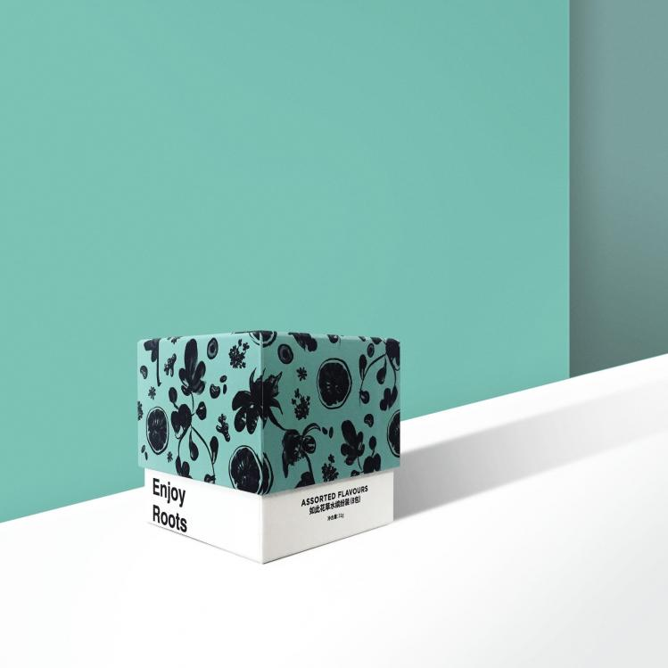
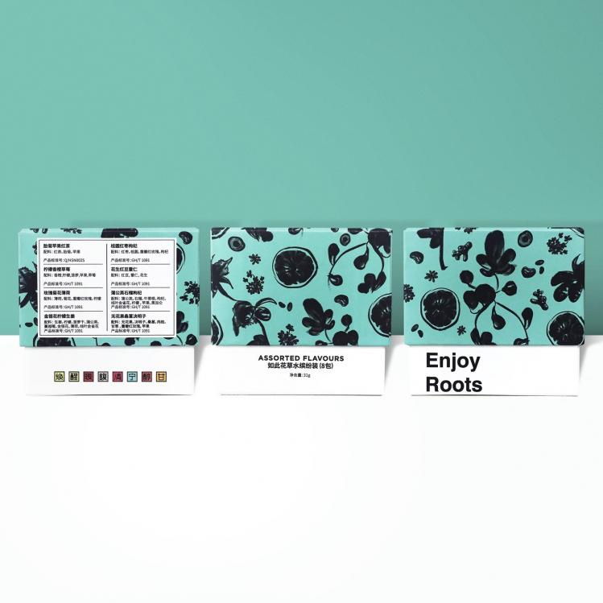
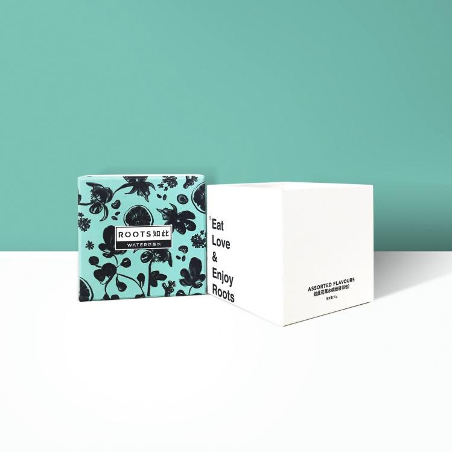
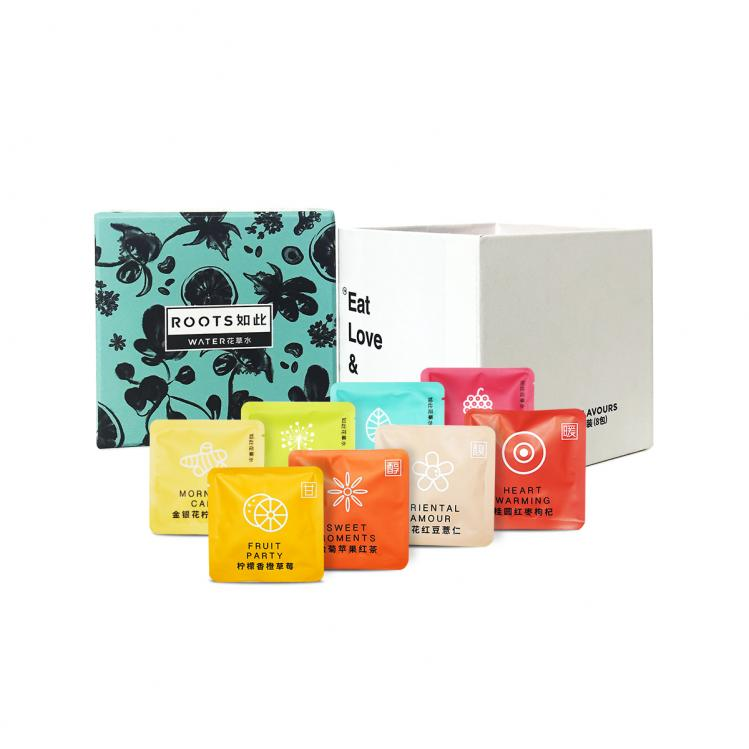
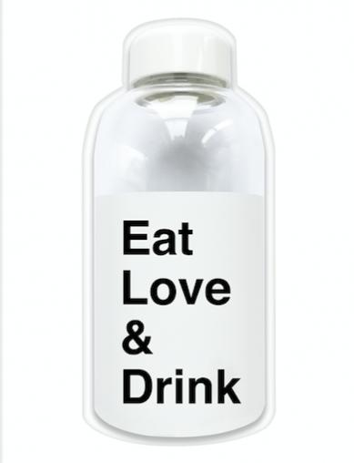

如此花草水- 中秋节礼套装
【品鉴记录】
“如此花草水”最新推出中秋节礼套装—16片如此花草水搭配清新风格如此冷泡瓶，让喝水，成为随时随地，拥有乐趣的事情，在秋日里滋润身心。16片茶包分为2盒8片装小礼盒，寓意成双成对，可以留一盒自饮，随手送一盒分享心意。8种不同口味的花草水，不添加食用香精，不添加白砂糖糖，让身体轻松无负担。中秋，和家人分享如此花草水，搭配一份甜美的月饼或茶点，更去油解腻，无疑是中秋良伴。
“如此花草水”最新推出中秋节礼套装—16片如此花草水搭配清新风格如此冷泡瓶，让喝水，成为随时随地，拥有乐趣的事情，在秋日里滋润身心。16片茶包分为2盒8片装小礼盒，寓意成双成对，可以留一盒自饮，随手送一盒分享心意。8种不同口味的花草水，不添加食用香精，不添加白砂糖糖，让身体轻松无负担。中秋，和家人分享如此花草水，搭配一份甜美的月饼或茶点，更去油解腻，无疑是中秋良伴。
【规 格】
如此花草水缤纷装（8包）*2盒 （共计16片茶包）
冷泡瓶*1个
如此花草水缤纷装（8包）*2盒 （共计16片茶包）
冷泡瓶*1个
Roots Water如此花草水－如此花草水缤纷装（套装内含两盒）
由如此花草师精心调配而成，采用天然原料，不添加香精和甜味剂，呈现自然原本的味道，每款都有独特的口味。茶包上每天不同的“花草签”，或犀利，或暖心，分享你生活里的“小确幸”。
蒲公英石榴枸杞：焕新身体 提高颜值
柠檬香橙草莓：酸甜爽口 补充维C
金银花柠檬生姜：提神醒脑 满血复活
无花果桑葚决明子：清润舒畅 气质担当
玫瑰菊花薄荷：宁神静心 赶走焦虑
桂圆红枣枸杞：补气暖身 香甜温润
胎菊苹果红茶：香醇回甘 润燥清火
桂花红豆薏仁：香气怡人 舒心祛湿
由如此花草师精心调配而成，采用天然原料，不添加香精和甜味剂，呈现自然原本的味道，每款都有独特的口味。茶包上每天不同的“花草签”，或犀利，或暖心，分享你生活里的“小确幸”。
蒲公英石榴枸杞：焕新身体 提高颜值
柠檬香橙草莓：酸甜爽口 补充维C
金银花柠檬生姜：提神醒脑 满血复活
无花果桑葚决明子：清润舒畅 气质担当
玫瑰菊花薄荷：宁神静心 赶走焦虑
桂圆红枣枸杞：补气暖身 香甜温润
胎菊苹果红茶：香醇回甘 润燥清火
桂花红豆薏仁：香气怡人 舒心祛湿




Roots Water 如此冷泡瓶
由如此设计师倾情打造便携式冷泡瓶，高品质耐热玻璃 ，装热水也没问题，饮茶更安心；造型灵巧方便，补水更方便；大口径瓶口，轻松畅饮，刷洗无忧。
由如此设计师倾情打造便携式冷泡瓶，高品质耐热玻璃 ，装热水也没问题，饮茶更安心；造型灵巧方便，补水更方便；大口径瓶口，轻松畅饮，刷洗无忧。

品牌介绍
如此：“如此Roots”是一个2016年在上海成立的消费品品牌，致力于打造一个“时髦、现代、艺术”的花草概念的茶点品牌。目前发布了两条产品线，如此花草水 和 如此花草巧克力。“如此Roots”是一个消费品中的设计师品牌，强调时髦而有冲击力的品牌视觉，希望创造一个直击当下年轻的生活方式品牌。
如此：“如此Roots”是一个2016年在上海成立的消费品品牌，致力于打造一个“时髦、现代、艺术”的花草概念的茶点品牌。目前发布了两条产品线，如此花草水 和 如此花草巧克力。“如此Roots”是一个消费品中的设计师品牌，强调时髦而有冲击力的品牌视觉，希望创造一个直击当下年轻的生活方式品牌。